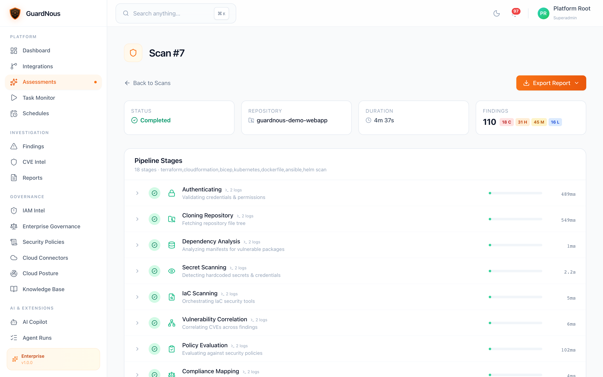
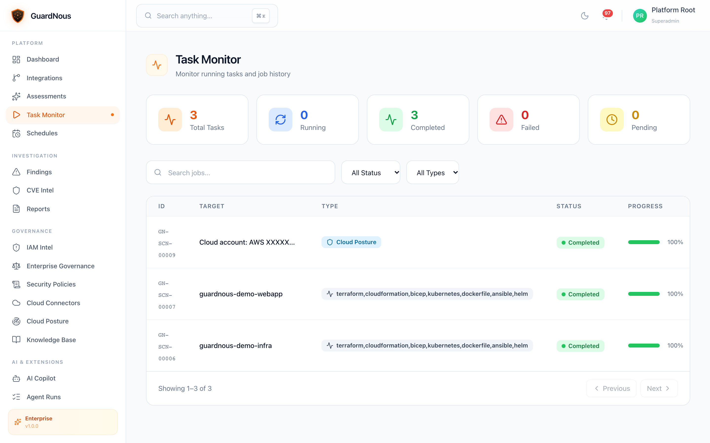
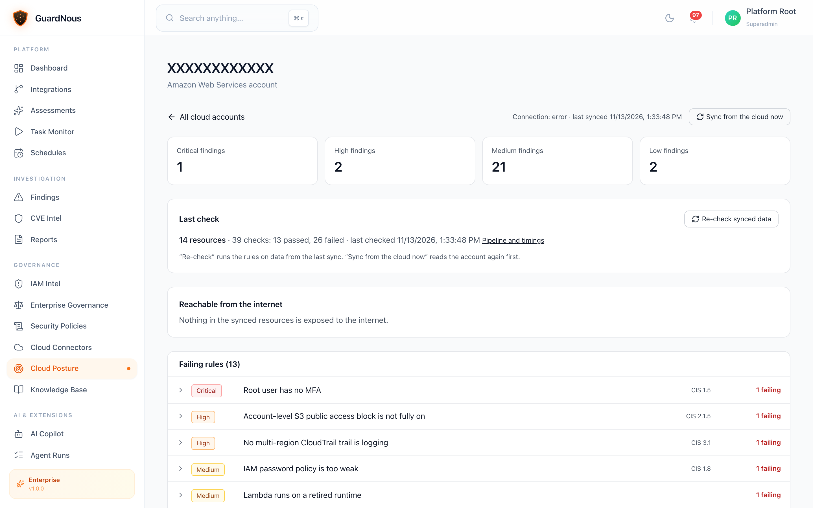
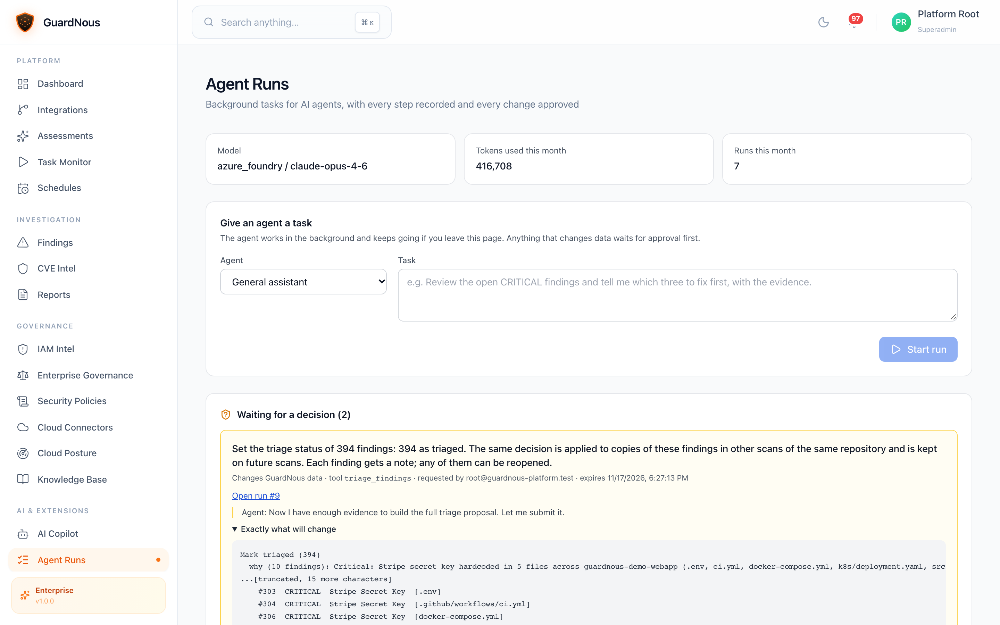

Product Tour
See it in action
Real screens from a running installation, with a connected AWS account and two scanned repositories.
 1. Sign in Your own instance, on your own infrastructure
1. Sign in Your own instance, on your own infrastructure
 2. Dashboard Score, open findings, and how many checks passed
2. Dashboard Score, open findings, and how many checks passed
 3. VCS Integrations Connect a code host and choose repositories
3. VCS Integrations Connect a code host and choose repositories


4. Assessment pipeline Every scan, stage by stage, with logs

5. Task Monitor Every background job and how long it took 6. Findings One list from every scanner, with SLA deadlines
6. Findings One list from every scanner, with SLA deadlines
 7. Cloud Connectors Connect AWS without storing access keys
7. Cloud Connectors Connect AWS without storing access keys


8. Cloud Posture One account: findings, exposure, failing rules 9. Cloud assessment pipeline Read the account, then check the rules
9. Cloud assessment pipeline Read the account, then check the rules
 10. AI Copilot An answer from live data, with a PDF to download
10. AI Copilot An answer from live data, with a PDF to download


11. Approval An agent's proposal, waiting for a person to approve it 12. Fix pull request Opened by an agent, after a second person approved
12. Fix pull request Opened by an agent, after a second person approved
Use the arrows to move through the tour, and click a screen to enlarge it. Account numbers and user names in the screenshots are masked.